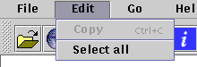

Using TrianaHelp
Introduction
TrianaHelp is a hypertext help viewer for viewing the help pages supplied with Triana applications. As the help pages are composed using standard HTML version 3.2 TrianaHelp can also be used as a simple World Wide Web browser for viewing both local pages and pages on the internet.
The Tools
Shown above is part of the toolbar showing the toolbar buttons together with the drop down menus above. The buttons from left to right are
The Menus
The File Menu
From this menu you can
The Edit Menu

From this menu you can
- Copy the select text
- Select all the text
The Go Menu
From this menu you can
- Go backwards in history
- Go forwards in history
- Show the index page
- View the history
The Help Menu
From this menu you can
- Show this page
- View the about box
Open file
This shows the dialog above which allows you to view an HTML document on the local file system.
Open URL
This shows the dialog above which allows you to view an HTML document on the network. You can enter any valid URL in the field and the help system will attempt to load that page.
History
The dialog above shows all the pages you have visited using the help system. To jump directly to a page highlight the relevant entry and select the GO button.